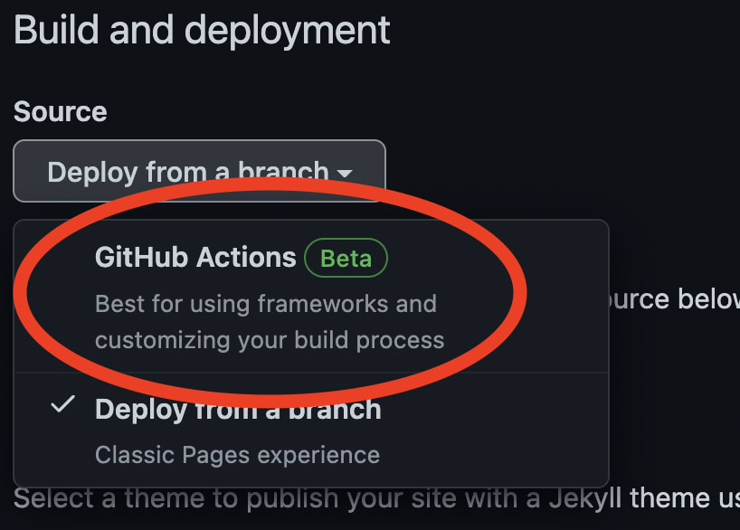
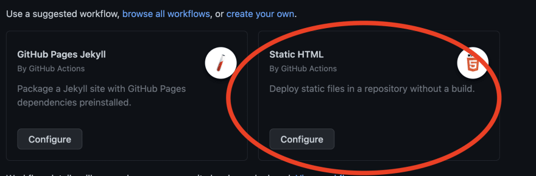
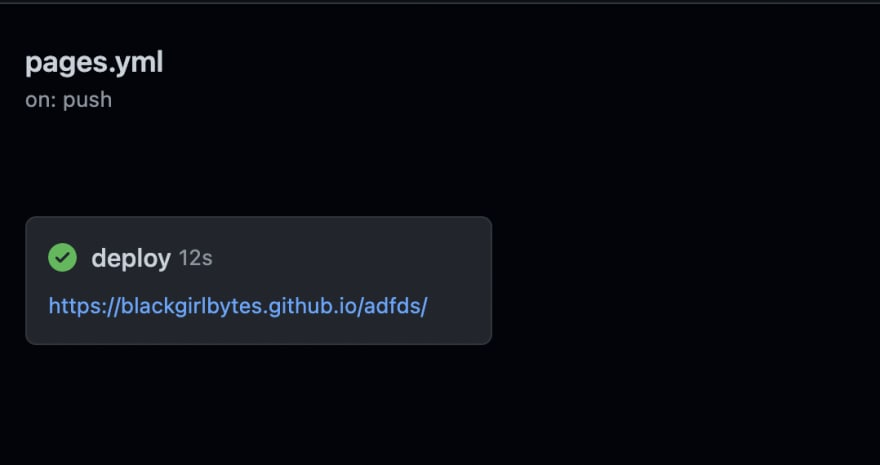

GitHub Pages now uses customizable GitHub Action workflows to build and deploy your code so that developers can control their authoring framework and deployment. GitHub Pages is a powerful option for storing static content for the following reasons:
It’s free.
It makes collaboration easy. Anyone can open a pull request to update the site.
Your repository syncs with any changes you made to your site.
While GitHub Pages comes with a default domain name like, https://YOUR_USER_NAME.github.io/ , it supports custom domains.
It uses customizable GitHub Action workflows for builds and deployments.
Let’s learn how to host static sites built with HTML on GitHub Pages!
After you create and store HTML in a repository, navigate to the settings tab for that repository.

Click Pages on the left sidebar

Under build and deployment, choose GitHub Actions

This will suggest a few workflows for you based on the code in your repository. You can choose Static HTML.

Clicking configure will lead you to a pre-made workflow. Feel free to review the YAML, tweak it to your preference, and commit the code.

Within a few seconds, your Action will start running. It will generate a URL and deploy your static site to GitHub Pages if successful.

Head over to your URL named yourusername.github.io/your_repo_name to check out your live website!
